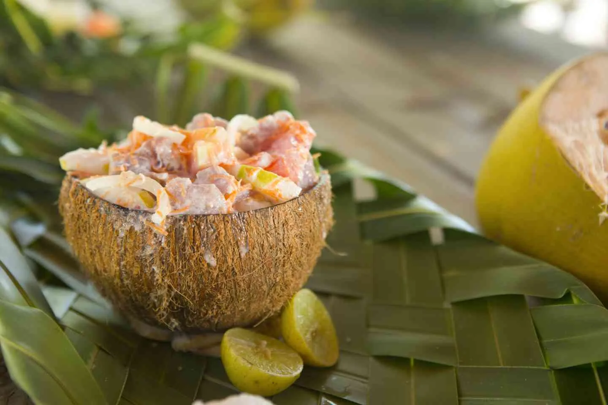
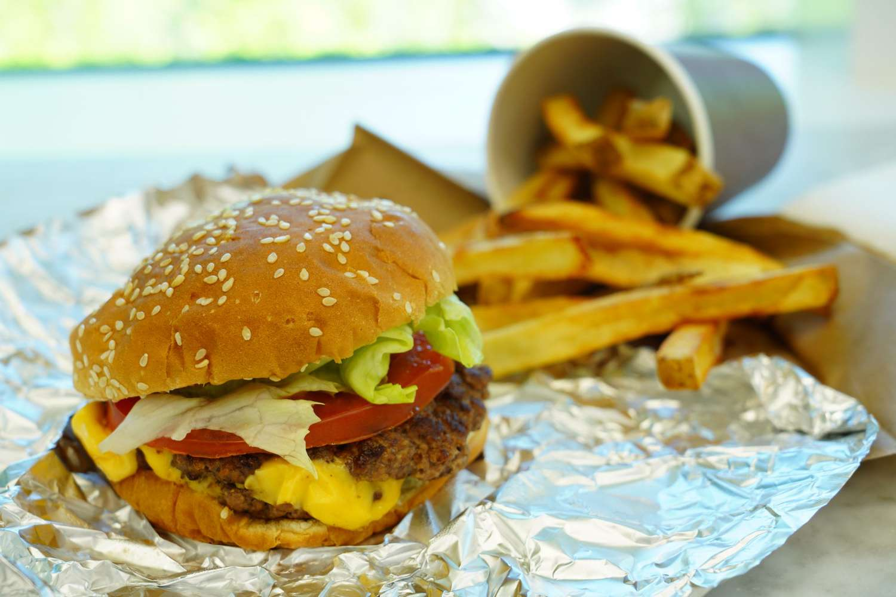

Taniti has a variety of restaurants, grocery stores, hotels, and even a 4 star resort.
Click the dropdowns below for more information.
Taniti has two supermarkets, two smaller grocery stores, and one convenience store that is open 24 hours a day. We also currently have 10 restaurants: five serve local cuisine, three serve American-style meals, and two serve Pan-Asian cuisine.
Most restaurants and stores are located in the town center.
|  |  |  |
| Local Cuisine | American Cuisine | Pan-Asian Cuisine |
Taniti has a wide variety of lodging that ranges from an inexpensive hostel to one large, four-star resort. There are many small, family-owned hotels and a growing number of bed and breakfasts. All types of lodging are strictly regulated and regularly inspected by the Tanitian government.
Reservations can be made through any major booking site or by calling +698 (504) 234-2345.
Reservations can be made through any major booking site or by calling +698 (504) 234-2345.
 |
 |
 |
| Traveler's Hostel | Mariott Hotel | Intercontinental Resort |
Taniti's world-class resort includes a variety of amenities including a business center, spa, multiple bars, restaurants, pools, and private beach access.
 Reservations can be made through any major booking site or by calling +698 (504) 234-2345.
Reservations can be made through any major booking site or by calling +698 (504) 234-2345.
Reservations can be made through any major booking site or by calling +698 (504) 234-2345.